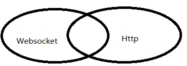
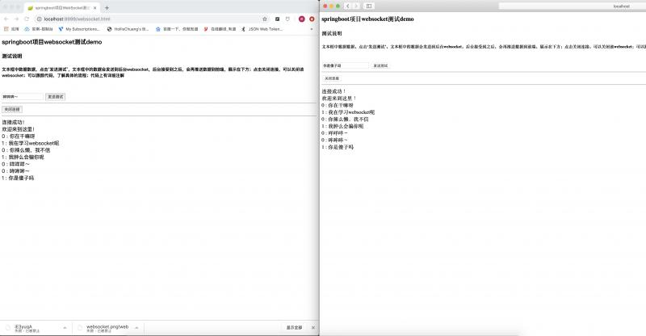

今天闲来无事，就来了解一下WebSocket协议。来简单了解一下吧。
首先了解一下WebSocket是什么？WebSocket是一种在单个TCP连接上进行全双工通信的协议。这是一种比较官方的说法，简单点来说就是，在一次TCP连接中，通信的双方可以相互通信。比如A和B在打电话，A说话的时候，B也可以说话来进行信息的交互，这就叫做全双工通信。对应的是单工通信，和半双工通信，单工通信就是只能由A向B通信，比如电脑和打印机。半双工通信是可以AB可以互相通信，但是同一时间只能进行单向通信，比如对讲机。

都建立在TCP之上，通过TCP协议来传输数据。
HTTP协议为单向协议，即浏览器只能向服务器请求资源，服务器才能将数据传送给浏览器，而服务器不能主动向浏览器传递数据。分为长连接和短连接，短连接是每次http请求时都需要三次握手才能发送自己的请求，每个request对应一个response；长连接是短时间内保持连接，保持TCP不断开，指的是TCP连接。
WebSocket一种双向通信协议，在建立连接后，WebSocket服务器和客户端都能主动的向对方发送或接收数据，就像Socket一样，不同的是WebSocket是一种建立在Web基础上的一种简单模拟Socket的协议；WebSocket需要通过握手连接，类似于TCP它也需要客户端和服务器端进行握手连接，连接成功后才能相互通信。WebSocket在建立握手连接时，数据是通过http协议传输的，“GET/chat HTTP/1.1”，这里面用到的只是http协议一些简单的字段。但是在建立连接之后，真正的数据传输阶段是不需要http协议参与的。
WebSocket解决客户端发起多个http请求到服务器资源浏览器必须要经过长时间的轮询问题。
Gradle：
compile group: 'org.springframework.boot', name: 'spring-boot-starter-websocket', version: '2.1.8.RELEASE'Maven：
<dependency>
<groupId>org.springframework.boot</groupId>
<artifactId>spring-boot-starter-websocket</artifactId>
<version>2.1.8.RELEASE</version>
</dependency>注入ServerEndpointExporter，这个bean会自动注册使用了@ServerEndpoint注解声明的Websocket endpoint。
import org.springframework.context.annotation.Bean;
import org.springframework.context.annotation.Configuration;
import org.springframework.web.socket.server.standard.ServerEndpointExporter;
/**
* @author: zp
* @Date: 2019-09-18 10:03
* @Description:
*/
@Configuration
public class AppConfiguration {
@Bean
public ServerEndpointExporter serverEndpointExporter(){
return new ServerEndpointExporter();
}
}
@ServerEndpoint("/webSocket/{page}")中的值就是需要访问的地址，和Controller中的@RequestMapping有点类似。然后实现@OnOpen（打开连接）,@OnClose（关闭连接）,@onMessage（收到消息）,@Error（触发异常）。
import org.slf4j.Logger;
import org.slf4j.LoggerFactory;
import org.springframework.stereotype.Component;
import javax.websocket.*;
import javax.websocket.server.PathParam;
import javax.websocket.server.ServerEndpoint;
import java.io.IOException;
import java.util.Map;
import java.util.Set;
import java.util.concurrent.ConcurrentHashMap;
import java.util.concurrent.CopyOnWriteArraySet;
import java.util.concurrent.atomic.AtomicInteger;
/**
* @author: zp
* @Date: 2019-09-20 15:12
* @Description:
*/
@Component
@ServerEndpoint("/webSocket/{page}")
public class WebSocket {
private Logger log = LoggerFactory.getLogger(this.getClass());
/**
* 用来记录房间的人数
*/
private static AtomicInteger onlinePersons = new AtomicInteger(0);
/**
* 用来记录房间及人数
*/
private static Map<String,Set> roomMap = new ConcurrentHashMap(8);
@OnOpen
public void open(@PathParam("page") String page, Session session) throws IOException {
Set set = roomMap.get(page);
// 如果是新的房间，则创建一个映射，如果房间已存在，则把用户放进去
if(set == null){
set = new CopyOnWriteArraySet();
set.add(session);
roomMap.put(page,set);
}else{
set.add(session);
}
// 房间人数+1
onlinePersons.incrementAndGet();
log.info("新用户{}进入聊天,房间人数:{}",session.getId(),onlinePersons);
}
@OnClose
public void close(@PathParam("page") String page, Session session){
// 如果某个用户离开了，就移除相应的信息
if(roomMap.containsKey(page)){
roomMap.get(page).remove(session);
}
// 房间人数-1
onlinePersons.decrementAndGet();
log.info("用户{}退出聊天,房间人数:{}",session.getId(),onlinePersons);
}
@OnMessage
public void reveiveMessage(@PathParam("page") String page, Session session,String message) throws IOException {
log.info("接受到用户{}的数据:{}",session.getId(),message);
// 拼接一下用户信息
String msg = session.getId()+" : "+ message;
Set<Session> sessions = roomMap.get(page);
// 给房间内所有用户推送信息
for(Session s : sessions){
s.getBasicRemote().sendText(msg);
}
}
@OnError
public void error(Throwable throwable){
try {
throw throwable;
} catch (Throwable e) {
log.error("未知错误");
}
}
}前端有点菜，写不出好看的ui，见谅～
<html>
<head>
<meta charset="UTF-8"></meta>
<title>springboot项目WebSocket测试demo</title>
</head>
<body>
<h3>springboot项目websocket测试demo</h3>
<h4>测试说明</h4>
<h5>文本框中数据数据，点击‘发送测试’，文本框中的数据会发送到后台websocket，后台接受到之后，会再推送数据到前端，展示在下方；点击关闭连接，可以关闭该websocket；可以跟踪代码，了解具体的流程；代码上有详细注解</h5>
<br />
<input id="text" type="text" />
<button onclick="send()">发送测试</button>
<hr />
<button onclick="clos()">关闭连接</button>
<hr />
<div id="message"></div>
<script>
var websocket = null;
if('WebSocket' in window){
websocket = new WebSocket("ws://127.0.0.1:9999/webSocket/1");
}else{
alert("您的浏览器不支持websocket");
}
websocket.onerror = function(){
setMessageInHtml("send error！");
}
websocket.onopen = function(){
setMessageInHtml("连接成功！")
setTimeout(function(){setMessageInHtml("欢迎来到这里！")
},2000)
}
websocket.onmessage = e => setMessageInHtml(e.data)
websocket.onclose = function(){
setMessageInHtml("连接断开！")
}
window.onbeforeunload = function(){
clos();
}
function setMessageInHtml(message){
document.getElementById('message').innerHTML += message+"</br>";
}
function clos(){
websocket.close(3000,"强制关闭");
}
function send(){
var msg = document.getElementById('text').value;
websocket.send(msg);
}
</script>
</body>
</html>
希望我们每天都有一点小收获～
如果觉得有用就关注我吧～